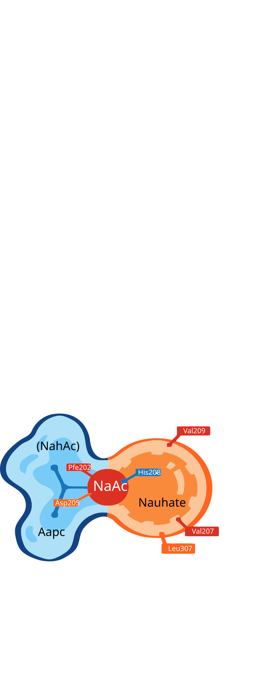

What are Polycyclic Aromatic Hydrocarbons?
Polycyclic aromatic hydrocarbons (PAHs) are a class of persistent organic pollutants composed of two or more fused aromatic rings. Naphthalene, the simplest PAH with two benzene rings, serves as our model compound due to its high prevalence and environmental mobility.
Anthropogenic Sources
PAHs are primarily produced through incomplete combustion of fossil fuels and biomass. Major sources include:
- Vehicle Exhaust: Traffic emissions contribute significantly to urban PAH pollution, with concentrations reaching 100-1000 ng/m³ in busy areas.
- Coal Combustion: Residential heating and industrial processes release large quantities of PAHs, particularly in winter months.
- Industrial Discharge: Petroleum refining, coking, and chemical manufacturing are major point sources.
- Petroleum Leakage: Oil spills and underground storage tank leaks contaminate soil and groundwater.
Environmental Distribution
PAHs are widely distributed across environmental matrices with global patterns dominated by traffic and coal combustion sources. They persist in soil (half-life: months to years), water bodies, and atmospheric particulates, showing bioaccumulation potential in food chains.

NahAc-Naphthalene Molecular Docking
Using YASARA software, molecular docking simulations between the NahAc subunit and naphthalene substrate revealed a binding energy of -6.84 kcal/mol. The primary binding site is stabilized by hydrophobic interactions, validating our metabolic pathway design.